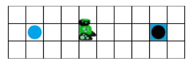
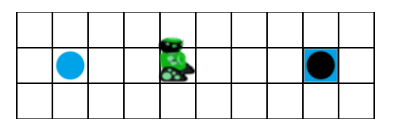
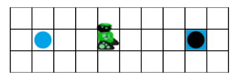

Murmeln verschieben


 

Programmiere den Roboter:
Er soll die Murmel in das Loch legen.
Benutze dafür den Baustein wiederhole, der es dir erlaubt,
eine Anweisung mehrfach hintereinander auszuführen.
Statt zum Beispiel fünfmal den gleichen Baustein zu verwenden,

kannst du auch den Baustein wiederhole 5 mal verwenden:

Um die Anzahl der Wiederholungen zu ändern, kannst du auf die Zahl im Baustein klicken und eine neue Zahl mit der Tastatur eingeben.
Benutze dafür die Wiederholungsanweisung for, die
dir erlaubt, eine oder mehrere Anweisungen mehrfach hintereinander auszuführen.
Statt zum Beispiel fünfmal den gleichen Befehl zu schreiben:
rechts() rechts() rechts() rechts() rechts()
benutze die Wiederholungsanweisung for:
for loop in range(5):
rechts()
Die Zahl in der Klammer gibt die Anzahl der Wiederholungen an. Alle Befehle, die in der Wiederholungsanweisung ausgeführt werden sollen, müssen eingerückt werden. Dies kannst du mit einem oder mehreren Leerzeichen oder einem oder mehreren Tabulatoren tun. Wichtig ist hierbei, dass du immer die gleiche Enrücktiefe verwendest und den Doppelpunkt nicht vergisst. Die Einrückungen sind wichtig, da sie Anzeigen welche Befehle zu welchem Block gehören. So geht der Roboter zum Beispiel mit den folgenden Anweisungen
for loop in range(5):
rechts()
links()
erst fünf Schritte nach rechts und dann einen nach links. Der Roboter bewegt sich komplett anders, wenn die Anweisungen so eingerückt sind:
for loop in range(5):
rechts()
links()
Und zwar führt der Roboter hier 5 Mal folgende Bewegung aus: einen Schritt nach rechts und direkt wieder einen Schritt nach links. Insgesamt bleibt er also auf der Stelle stehen.